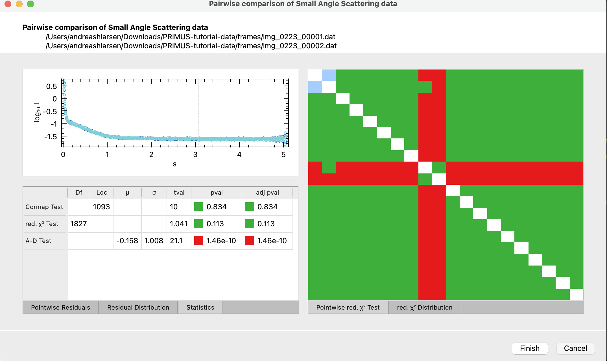

Home
Tutorial: Primary Data Reduction with Primus
Contributors: Jeppe Breum Jacobsen

Data (blue) and buffer (green) prior to subtraction.
Before you start
This tutorial relies on the program Primus, which can be downloaded from EMBL Hamburg as a part of ATSAS.
Learning Outcomes
After completing this tutorial, you will be able to perform primary data reduction with Primus, including:- Identifying and removing outliers in data sets.
- Merging data files to obtain an average.
- Performing background subtraction.
Part I: Identifying outliers
In a SAS experiment, it is often preferable to perform multiple shorter measurements rather than a single prolonged one.
If something goes wrong during the experiment (e.g., a bubble in the sample, malfunctioning cryostat, or a user error), it is easy to exclude the problematic measurement from the data set.
Sometimes the outliers are not as obvious, and it is necessary to use statistical methods to identify them.
Download this zip-file containing a series of data files. We are only concerned about the files in the frames folder.
If ATSAS is installed, you should have a program titled "SAS Data Analysis" or "Primus" installed. Run the program and click on the "Open" button and select the 20 files that start with "img_0223_".

After loading the data you should see a windows like the one above. The data is plotted in the left window, and the right window shows the data in a table format, where each data file can be selected/deselected.
To get the usual log-log plot, click on the "Plot" section and select "Double Logarithmic Scale" if you wish.
Try to identify the outliers by visual inspection. It will probably not be easy.
To identify the outliers more easily, click the "Processing" section, and then the "Compare" button.
This will open a new window like the one below.

On the right side of the window, you can see how every data file compares to every other datafile. The rows and columns correspond to the data files (hence the diagonal line is just white, since you are comparing a data file to itself).
A green box indicates that the two data files are similar, while a red box indicates that they are different. By clicking a red or green box you can see the two data files plotted against each other,
as well as their residuals.
The table at the bottom shows how the two data files compare in three statistical tests. They are determined to be "different" (red) if the p-value in two of the tests are below a certain threshold.
Determine which data files are outliers and exclude them from the data set in the main window by "unchecking" them.
Part II will cover how to merge the data files to obtain an average and perform background subtraction.
Part II: Merging and background subtraction
After identifying and deselecting the outliers go to the "Processing" section and click "Combine". This creates a new file called "avrg_001.dat".
Primus automatically takes care of binning, averaging, and error estimation. When you have the averaged data, go to "file" and click "close all".
In a SAS experiment, it is common to take a buffer (or background) measurement that can be subtracted from the sample measurement.
By subtracting the buffer measurement, you remove the scattering contribution from the solvent, container and instrument specific contributions.
The zip-file from Part I contains two series of buffer measurements (files starting with "img_0222_" and "img_0224_").
Load these files (simultaneously) into Primus and remove the outliers (if there are any?) as described in Part I. Next, combine them just like before.
Now you can go to "file" and "close all".
To subtract the buffer from the sample, load the two averaged files "avrg_001.dat" and "avrg_002.dat" into Primus. Make sure that the sample average file is above the buffer file in the list of loaded files.
Next in the "Processing" section click "Subtract". This creates a new file called "sub_001.dat". This file contains the background subtracted data.
-
Inspecting the subtracted data
- Deselect averaged data and buffer files, and select only the "sub_001.dat" file.
- Navigate to the "Plot" section and select "Absolute scale" if it's not already selected.
- Zoom in on the region with close to zero intensity.
- The data points should not systematically be below 0 intensity. The highest $q$ region can be ignored.
- If you accidentally subtracted the sample from the buffer, it should also be apparent here.
Challenges
- Challenge 1: Download this SAXS data form silver nanoparticles. Data files are labeled as
data and buffer files are labeled asbg . Perform primary data reduction on the files using Primus.
Feedback
Help us improve the tutorials by- Reporting issues and bugs via our GitHub page. This could be typos, dead links etc., but also insufficient information or unclear instructions.
- Suggesting new tutorials/additions/improvements in the SAStutorials forum.
- Posting or answering questions in the SAStutorials forum.